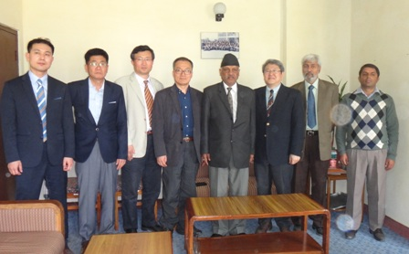
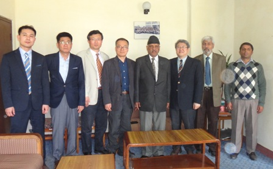

Overview
Pokhara University (PU or PoU) was established in 1996 as Nepal's fifth university. Its central office is in
Pokhara, Kaski district, Western Development Region. Along with Purbanchal University, PU was formed as part of the government's policy for improved access to higher education.
The prime minister is the university chancellor and the minister for education is the pro-chancellor. The vice chancellor is the principal administrator of the university.
Continue to article
History
Nepal adopted the multi-university concept in 1983. The idea of Pokhara University (PU) was conceived in 1986;
however, it was established only in 1997 under the Pokhara University Act, 1997. Continue to article
Acamedics
A semester system based curriculum and evaluation are set up.
Pokhara University has four Constituent Schools where Bachelor's, Master's degrees and PhD programs are running.
There are 57 academic institutions under its affiliation with Bachelor, Master, M.Phil and PhD. degrees programs.
Pokhara University has a Central Office building, Examination Office building, and Academic building in Khudi-Dhungepatan, Lekhnath Municipality.
Continue to article
Infrastructures
Pokhara University has started its operation from rented premises. Laying foundation stone of the central office of the university was
held at Khudi of Dhungepatan in Ward No 12 of Lekhnath Municipality in 2000. The university has been launching of its all activities, both academic and administrative,
from its own building here in Lekhanath by the year 2007.
Continue to article
Governance
The Prime Minister is the Chancellor of the University and the Minister of Education is the Pro-Chancellor of the University.
The Vice Chancellor is the principal administrator of the University and the University Senate is the supreme body of the university. Registrar is the member secretary of senate.
Various Councils, Committees and Boards are also in scene with specific task and objectives for better operation of the University and achieving academic goodwill.
The detailed University organization is given below.
Continue to article
MISSION
Quality education should necessarily not be limited to rhetoric. It has to be in reality and action,
so that the university students imbibe critical thinking skills, develop positive attitude to work, and enhance competitiveness. Pokhara University,
the youngest university system operating full-fledged programs in the country, aims at producing human resources capable of working for the nation as well as the global community.
Continue to article
Photos


 
